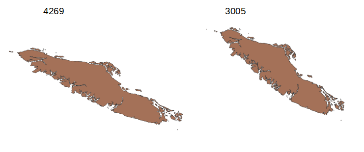
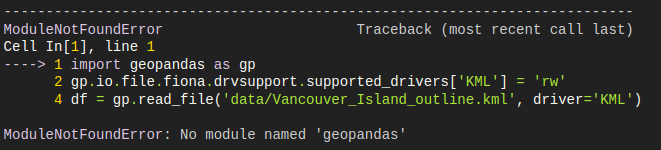
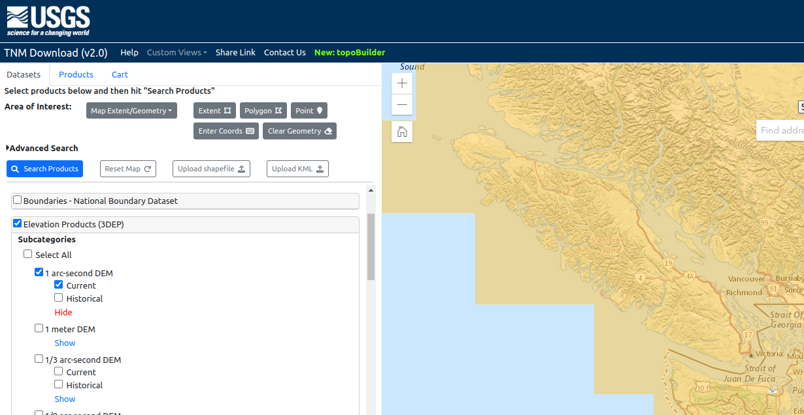
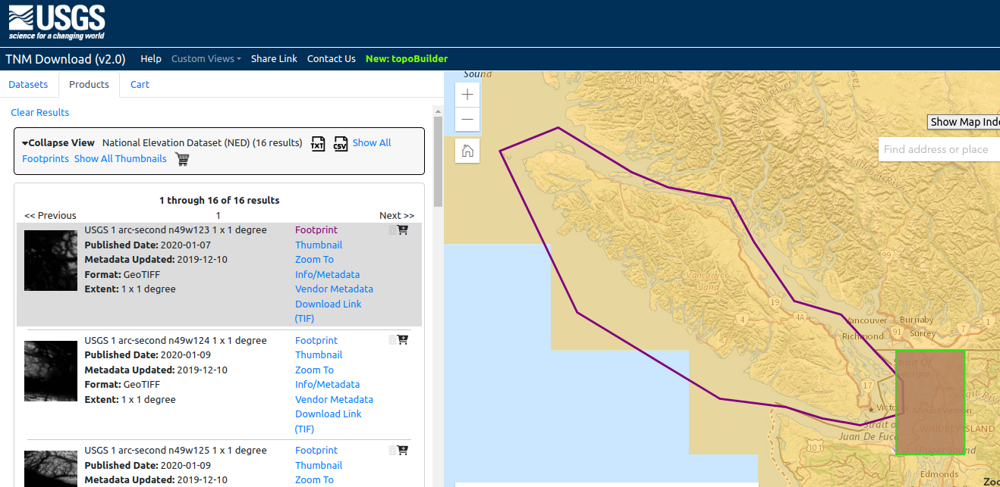

1. Getting Started#
In this notebook, we install Python libraries required for data processing, download a covering set of DEM tiles from the USGS map downloader application (programmatically).
Dependencies#
The BCUB database was developed in the Python programming language (version 3.10) and it has a number of depencencies which are listed in requirements.txt. The dataset was developed in Ubuntu Linux, but the process for Windows/Mac is not much different, however you should expect at some point to run into hardware-software disagreement depending upon your combination of OS & hardware. YMMV with the information provided herein.
Install the required Python packages using $ pip install requirements.txt.
This dataset pulls together information from a variety of sources and requires significant effort to aquire and process.
Environment#
It is recommended that you create a new virtual environment to run these files. It is assumed that the user is familiar with setting up a virtual environment and installing libraries with Conda or Pip.
DEM Acquisition#
The first step in creating our basin dataset is to create a geometry representing the study area and use it to retrieve a covering set of digital elevation data (DEM).
In this section we retrieve DEM from the USGS 3D Elevation Program. This dataset covers all of North America at roughly 30m resolution. I’ve found a polygon describing Vancouver Island, British Columbia, an area of about 32,000 \(km^2\). If you view the polygon in the geographic CRS EPSG 4269 or 4326, it will look a bit skewed (like the image below at left). If you project it to an equal area projection (BC Albers, EPSG 3005) it will take a more representative spatial form below at right.

Let’s try loading and viewing the Vancouver Island Polygon. The file is saved in the .geojson format under data/region_polygons/Vancouver_Island.geojson
import os
import geopandas as gpd
base_dir = os.getcwd()
polygon_path = os.path.join(base_dir, 'data/region_polygons/Vancouver_Island.geojson')
df = gpd.read_file(polygon_path)
df.crs
Did you get this ModuleNotFound error?

If so, it means you need to install the geopandas library.
This can be done one by one as you encounter packages, i.e.:
>pip install geopandas
Or all at once by running the command:
>pip install -r requirements.txt
Or with Conda:
>conda install --file requirements.txt
DEM URL List#
If you visit the USGS TNM Download application you should see ‘Elevation Products (3DEP)’ under Data in the Datasets tab on the left hand side:

You can draw a polygon on the map and click “Search Products”, and this will yield a list of about 16 files corresponding to the DEM tiles that intersect your polygon.

In the box next to ‘collapse view’ there is an option to save a .txt or .csv file. This list of links has already been saved to the content/data/ folder. Let’s load it now using the Pandas library:
import os
import pandas as pd
# base_dir = os.path.dirname(os.getcwd())
# I've gone ahead and previewed the table to see the 14th column index
# contains the download links corresponding to the .tif DEM file
links_path = os.path.join(base_dir, 'data/download_links.csv')
links = pd.read_csv(links_path, header=None, usecols=[14])
Download the covering DEM tile set#
import os
# set the path where the DEM files should be saved locally
# save_path = os.path.join(base_dir, 'data/DEM/')
dem_path = os.path.join(base_dir, 'data/DEM/')
if not os.path.exists(dem_path):
os.mkdir(dem_path)
def download_file(url):
# download a file from a url and save it to a specified directory
filename = url.split('/')[-1]
command = f'wget {url} -P {dem_path}'
out_path = os.path.join(dem_path, filename)
if not os.path.exists(out_path):
print(command)
os.system(command)
for _, row in links.iterrows():
url = row.values[0]
download_file(url)
View a DEM file#
Using the rioxarray library, let’s load a tile and look at its properties, namely the CRS.
import rioxarray as rxr
dem_files = os.listdir(dem_path)
test_file = dem_files[0]
dem = rxr.open_rasterio(os.path.join(dem_path, test_file))
dem
Above we can see the properties of the DEM tile. Namely, the x and y coordinates are decimal degrees. We can get the CRS (EPSG 4269) and the DEM resolution (in degrees) by the following:
crs = dem.rio.crs.to_epsg()
crs
dem.rio.resolution()
Build a virtual raster file (VRT) to enable spatial operations on the set of DEM tiles as a mosaic.
# this command builds the dem mosaic "virtual raster"
vrt_path = f'{dem_path}/USGS_3DEP_mosaic_4269.vrt'
vrt_command = f"gdalbuildvrt -resolution highest -a_srs epsg:4269 {vrt_path} {dem_path}/*.tif"
if not os.path.exists(vrt_path):
os.system(vrt_command)
GDAL#
If the above command failed, check to ensure you have GDAL installed. See this discussion. For Windows and MacOS, see this tutorial. You may need to install system-level packages, i.e. on Ubuntu Linux:
>sudo apt-get install libgdal-dev